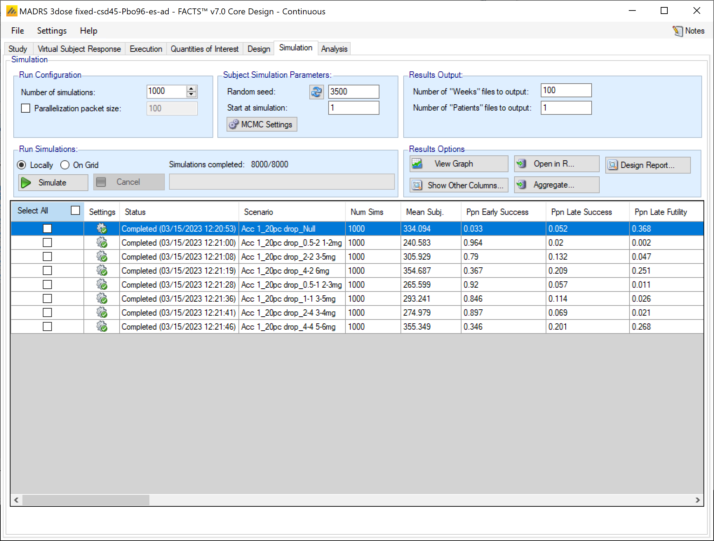

Simulation
Description of the simulation tab and the results generated by simulations.
The Simulation tab allows the user to execute simulations for each of the scenarios specified for the study. The user may choose the number of simulations, whether to execute locally or on the Grid, and modify the random number seeds, Figure 11‑1.
N.B. Each time the FACTS application opens, the “Number of Simulations” will be set to the number of simulations last run for this design. If completed results are available, the actual number of simulations run for each scenario is reported in the ‘Num Sims’ column of the results table. The value displayed in the “Number of Simulations” control is the number of simulations that will be run if the user clicks on the ‘Simulate’ button.
Note also that if a scenario uses an external VSR file or directory of external files, the number of simulations will be rounded down to the nearest complete multiple of the number of VSR lines or external files. Unless the number of simulations requested ‘S’ is less than the number of VSR lines or external files, in which case just the first S are run. Finally note that the simulations will be performed in packets such that each packet only uses one external VSR line or file, so packet sizes may be smaller than requested.

N.B. FACTS uses Markov Chain Monte Carlo methods in the generation of simulated patient response data and trial results. In order to exactly reproduce a statistical set of results, it is necessary to start the Markov Chain from an identical “Random Seed”. The initial random seed for FACTS simulations is set from the simulation tab, the first thing that FACTS does is to draw the random number seeds to use at the start of each simulation. It is possible to re-run a specific simulation, for example to have more detailed output files generated, by specifying ‘start at simulation’.
Say the 999th simulation out of a set displayed some unusual behavior, in order to understand why, one might want to see the individual interim analyses for that simulation (the “weeks” file), the sampled subject results for that simulation (the “Subjects” files) and possibly even the MCMC samples from the analyses in that simulation. You can save the .facts file with a slightly different name (to preserve the existing simulation results), then run 1 simulation of the specific scenario, specifying that the simulations start at simulation 999 and that at least 1 weeks file, 1 subjects file and the MCMC samples file (see the “MCMC settings” dialog) are output.
Even a small change in the random seed will produce different simulation results.
The same random number seed is used at the start of the simulation of each scenario. If two identical scenarios are specified then identical simulation results will be obtained. The same may happen if scenarios or designs only differ in ways that have no impact on the trials being simulated, for instance designs that have no adaptation, or scenarios that don’t trigger any adaptation (e.g. none of the simulations stop early).
The user can specify:
The number of simulations for which ‘Weeks’ files, ‘Subjects’ files and “Frequentist Weeks” files are written.
‘Weeks’ files record the data, analysis and recommendation at each interim.
‘Subjects’ files record the subject responses simulated for the trial.
If Frequentist analysis has been enabled, then “Frequentist Weeks” files record the results of the frequentist analysis at each interim.
The parallelization packet size, this allows simulation jobs to be split into runs of no-more than the specified number of trials to simulate. If more simulations of a scenario are requested than can be done in one packet, the simulations are started as the requisite number of packets and the results combined and summarized when they are all complete – so the final results files look just as though all the simulations were run as one job or packet.
The packet size should be a multiple of the number of any rows in any MVSR file used for any of the scenarios and the total number of simulations should be a multiple of the packet size.
When running simulations on the local machine FACTS enterprise version will process as many packets in parallel as there are execution threads on the local machine. The overhead of packetization is quite low so a packet size of 10 to 100 can help speed up the overall simulation process – threads used to simulate scenarios that finish quicker can pick up packets for scenarios that take longer, if the number of scenarios is not directly divisible by the number of threads, packetization uses all threads until the last few packets have to be run and finally the “Simulations complete” figure can be updated at the end of each packet, so the smaller the packet the better FACTS can report the overall progress.
0.1 To run simulations
Click in the check box in each of the rows corresponding the to the scenarios to be run. FACTS displays a row for each possible combination of the ‘profiles’ that have been specified: - baseline response, dose response, longitudinal response, accrual rate and dropout rate. Or simply click on “Select All”.
Then click on the “Simulate” button.
During simulation, the user is prevented from modifying any parameters on any other tab of the application. This safeguard ensures that the simulation results reflect the parameters specified in the user interface.
When simulations are started, FACTS saves all the study parameters, and when the simulations are complete all the simulation results are saved in results files in a “_results” folder in the same directory as the “.facts” file. Within the “_results” folder there will be a sub-folder that holds the results for each scenario.
0.2 How many simulations to run?
After first entering a design it is worth running just a small number of simulations such as 10 to check that the scenarios and design have been entered correctly. If all 10 simulations of a ‘null’ scenario are successful, or all 10 simulations of what was intended to be an effective drug scenario are futile, it is likely there has been a mistake or misunderstanding in the specification of the scenarios or the final evaluation or early stopping criteria.
Once the design and scenarios look broadly correct, it is usually worth quickly collecting rough estimates of the operating characteristics using around 100 simulations for each scenario. 100 simulations is enough to spot designs having very poor operating characteristics such as very high type-1 error, very poor power, a strong tendency to stop early for the wrong reason, or poor probability of selecting the correct target. 100 simulations is also usually sufficient to spot problems with the data analysis such as poor model fits and significant bias in the posterior estimates.
Typically 1,000 simulations of each scenario of interest is required to get estimates of the operating characteristics precise enough to compare designs and tune the parameters. (Very roughly rates of 5% (such as type-1 error) can be estimated to about +/-1.5% and rates of around 80% (such as power) estimated +/- 2.5%)
Finally around 10,000 simulations of the scenarios of interest is required to give confidence in operating characteristics of a design and possibly to select between the final shortlisted designs (Approximately rates of 5% can be estimated to about +/-0.5% and rates of around 80% estimated +/- 1%).
There may be many operating characteristics need to be compared over a number of scenarios, such as expected sample size, type-1 error, power, probability of selecting a good dose as the target and quality of estimation of the dose-response.
However frequently these will be compared over a range of scenarios, it may not be necessary to run very large number of simulations for each scenario if a design shows a consistent advantage on the key operating characteristics over the majority of the scenarios.
0.3 What packet size to use?
You must specify a packet size that is a factor of the number of simulations per scenario to run; this offers the following benefits:
If running locally a small packet size allows the simulation of an individual scenario to be divided between the different number of CPUs in your laptop or PC. This is beneficial because often some scenarios are quicker to simulate (e.g. they often stop early) than others; if simulations were being divided between cores simply at the scenario level, this would lead to idle cores, once the simulations had completed. Additionally if the number of cores did not directly divide into the number of scenarios there would be cores idle as the last scenarios were simulated.
The “Simulations completed” count will be updated more frequently.
If running on a grid then having a small packet size means the job can be distributed over more nodes in the grid and thus completed more quickly.
Note, the overhead of creating the packets and re-combining the results is low compared to the time to run the simulations.
Packet sizes of between 10 (when running 100 simulations) and 100 (when running 10000 simulations) are recommended.
Care should be taken when packetizing a scenario that includes an external data file to supply the virtual subject responses; in this situation, a of copy of the external file is included in each packet which can cause the packetisation process to run out of memory as the packets are being created. In this case, use a smaller number of larger packets, such as packets that are 1/10th of the total number of simulations.
0.4 MCMC Settings
To set advanced settings for simulation, the user may click the “MCMC Settings” button, which will display a number of additional specifiable parameters for simulation in a separate window.

The first two values specify two standard MCMC parameters –
The length of burn-in is the number of the initial iterations whose results are discarded, to allow the MCMC chain to reach its equilibrium distribution.
The number of samples is the number of subsequent iterations whose results are recorded in order to give posterior estimates of the values of interest.
An additional MCMC parameter controls the sampling within sampling when the analysis includes imputation from a longitudinal or predictor model:
- The third parameter controls the number of MCMC samples taken between each imputation of missing data using the longitudinal model, the default value is 1. This parameter only has an effect if Bayesian imputation is being used to impute a significant proportion of your data. This allows the parameter estimates to converge somewhat for each set of imputed data, if the imputed data is only a small percentage of the overall data this is unnecessary. As a rough guide, if it at some early interims > 5% of the data being analyzed will be imputed, a value in the range 2 to 10 is recommended to avoid underestimating the uncertainty. A higher number should be used the greater the proportion of imputed data.
The last two parameters concern the output of the MCMC samples to a log file:
It is possible to have the design engine output the sampled values in the MCMC, in all of the interims of the first N simulated trials of each scenario by specifying the “Number of MCMC files to output” (setting N > 0). The resulting files, ‘mcmcNNNN.csv’, will be in the results directory with all the other results files for that scenario.
It is also possible to reduce the size of these files by specifying a “thinning parameter”.
0.5 FACTS Grid Simulation Settings
A user with access to a computational grid, may choose to run simulations on the grid instead of running them locally. This frees the user’s computer from the computationally intensive task of simulating so that they can continue other work or even shutdown their PC or laptop. In order to run simulations on the grid, it must first be configured, this is normally done via a configuration file supplied with the FACTS installation by the IT group responsible for the FACTS installation.
0.6 Simulation Results
In the center of the simulation tab, the summary simulation results are displayed. There are many columns of results, these are now organized into related groups of sub-windows, which can be displayed by clicking on the “Show other Columns” button.

These windows will show:
All all the columns
Highlights the columns shown on the main tab.
Allocation the columns that report of subject recruitment and allocation
Response the columns that report that estimate treatment response, the SD of the estimate, the estimate of the SD of the response, the true treatment response and the true SD of the response.
Probabilities the proportion of times for each dose that it met the different target criteria (Max, EDx & MED) and the posterior probabilities for each dose that its treatment response is better than control, better than control by the CSD and better than the active comparator.
Stopping Rules the proportion of times the different stopping criteria were met
Model Parameters the columns that report the estimates of the values of the model parameters.
Simulation Results A window that displays the individual simulation results for the currently selected scenario.
Frequentist results If frequentist analysis is enabled, the summary results can be viewed, these are grouped by how missing data has been treated: Last Observation Carried Forward (LOCF), Baseline Observation Carried Forward (BOCF – if baseline has been simulated), Per-Protocol (PP).
0.7 Right Click Menu
Clicking the Right-hand mouse button on a row in the simulations tab brings up a short cut menu:

These will respectively:
Open a new Windows directory browser window showing the contents of the simulation results for that scenario.
Open a window that displays the individual simulation results for that scenario. The results initially displayed are the ‘highlights’ columns, similarly to the summary results (see below) the results columns are collected into sub-groups, windows of these subgroups can be opened from the Right Click menu of the Simulation Results highlights window.
Open a window that displays the frequentist analysis summary results. This option is only available if one or more frequentist analyses have been selected on the Design > Frequentist Analysis tab. (If more than one analysis has been requested – using different treatments of missing data there will be separate options in the menu to display each summary).
Open R loading in the result files for that scenario as separate dataframes.
Opens the FACTS graph control displaying the graphs for that scenario.
Opens the FACTS graph control that displays the trellis plot of graphs of selected scenarios for selected design variants.
0.8 Open in R
If aggregated results files have been created then the Open in R button will start R and load the aggregated ‘.csv’ files.
If there are no aggregated files then the results files of the currently selected scenario are loaded. R can also be opened in this fashion by right clicking on a row in the simulation results table.
When FACTS starts R it writes out an R auto run startup script that loads the csv files into R as separate dataframes.
0.9 Aggregation
Aggregation combines the csv output from multiple scenarios into fewer csv files. The Aggregate… button displays a dialog which allows the user to select what to aggregate.

The default location for the aggregated files is the results directory for the study, but this can be changed.
Aggregation may be performed with or without pivoting on group, or both.
Unpivoted files will have one row for each row in the original files.
In pivoted files each original row will be split into one row per dose.
Where there is a group of columns for each dose, they will be turned into a single column with each value on a new row.
Values in columns that are independent of dose will be repeated on each row.
The default is to aggregate all scenarios, but any combination may be selected.
Pressing “Aggregate” generates the aggregated files.
Each type of csv file is aggregated into a separate csv file whose name begins agg_ or agg_pivot_, so agg_summary.csv will contain the rows from each of the summary.csv files, unpivoted. WeeksNNNNN.csv files are aggregated into a single agg_[pivot_]weeks.csv file. PatientsNNNNN.csv files are aggregated into a single agg_patients.csv file, but they are never pivoted because each row already refers to a single dose. Similarly the various frequentist results at the summary, simulation and weeks level are aggregated (if they’ve been output).
RegionIndex.csv is not aggregated.
Each aggregated file begins with the following extra columns, followed by the columns from the original csv file:
| Column Name | Comments |
|---|---|
| Scenario ID | Index of the scenario |
| Recruitment Profile | A series of columns containing the names of the various profiles used to construct the scenario. Columns that are never used are omitted (e.g. External Subjects Profile if there are no external scenarios) |
| Dropouts Profile | |
| Longitudinal Rates Profile | |
| Dose Response Profile | |
| External Subjects Profile | |
| Agg Timestamp | Date and time when aggregation was performed |
| P(TS) | Proportion of trial success (early success + late success) |
| P(TF) | Proportion of trial futility (early futility + late futility) |
| Sim | Simulation number. Only present in weeks and patients files. |
| Dose | Only present if pivoted |
0.10 Design Report
This button becomes enabled once there are simulation results, it uses an R script and R libraries to generate a MS Word document describing the design.
See the FACTS Design Report User Guide for details of what R packages need installing, how FACTS needs configuring to use the correct R instance, how the generate_report() function is run, and where the resulting report can be found.
1 Trial States
1.1 State descriptions
For the purposes of interims, the different states or stages of a trial are:
In Burn-in / before first analysis. In adaptive allocation designs, the burn-in denotes the initial group of subjects explicitly assigned to treatment arms before probabilistic allocation begins. FACTS prevents the burn-in requiring more subjects than the maximum number of subjects – but the numbers can be equal. Regardless of the interim schedule specified (e.g., frequency, number of subjects or number of events), a) no analyses are performed during this period of time, and b) the first analysis is performed at its conclusion. In arm dropping and early stopping designs the first analysis occurs at the explicitly specified initial interim. Interims are never performed in non-adaptive designs; rather, the first and only analysis occurs when the max subject’s final observation is taken. In all cases, it is possible to reach the maximum number of events prior to the first analysis, making the study complete.
Mid Trial. Interims are performed and all rules assessed. If arms have been dropped, the per-arm posterior probabilities are still calculated for the dropped arms but the drop decision for the arms is absorbing and not re-assessed.
Fully Accrued but not complete. All subjects have been recruited and being followed up. If interims are by subject or ‘interim analysis beyond full accrual’ is set to FALSE, then the only possible next event is ‘last subject final observation’.
Stopped Early but still following up. The study stopping rules are not evaluated, but arm dropping rules are. Interims may still occur.
Complete. All possible data collected for every enrolled subject.
1.2 Analysis trigger events
The following are the events that trigger interims, stopping or changes of trial state:
Last event is observed (TTE trial with a max number of events – this is the only circumstance that can arise before the end of burn-in / first analysis that can stop the trial).
A “number of subjects interim” occurs (other than last subject of burn-in / first analysis)
A “cohort complete” interim occurs (when using cohort enrolment). A cohort complete event is slightly different from a “number of subjects interim” in that after a cohort is fully enrolled the interim does not occur until all the subjects are complete.
Study max subject size is reached.
Recruit last subject of burn-in / first analysis occurs.
A “time” or “number of events” interim occurs.
Last subject’s final observation is taken (in a TTE trial this might be that the last subject to have an event has their event, or last subject recruited reaches the end of the maximum follow-up and is censored).
1.3 Trial State Transitions
Note: the term “study arms” is used to refer to the treatment arms that are not the control or active comparator arm. In an arm dropping design only the study arms can be dropped, and the trial stops if all study arms are dropped.
| State transition table | |||||
|---|---|---|---|---|---|
|
Triggers Processed in order… |
1: In Burn-in / before first analysis [This is the starting state for adaptive allocation designs] |
2: Mid Trial [This is the starting state for arm dropping, early stopping, and non-adaptive designs] |
3: Fully Accrued but not complete |
4: Stopped Early but following up [This state can only be entered if “Continue follow-up if study stopped for success/futility is set] |
5: Complete [This is the final state] |
| A: Last event is observed [can only occur in TTE trials] |
A “final evaluation” is output. Go to “5: Complete” |
A “final evaluation” is output. Go to “5: Complete” |
A “final evaluation” is output. Go to “5: Complete” |
A “final evaluation” is output. Go to “5: Complete” |
N/A |
| B: A “number of subjects” interim occurs | N/A |
An interim is output. If arm dropping, check not yet dropped arms to see if any should be dropped and flag those that are. If stopping conditions are met or all study arms dropped then if “Continue follow-up” for the appropriate decision is selected go to “4: Stopped Early” otherwise a “final evaluation” is output and Go to “5: Complete” If the interim size = Max subjects then go to “3: Fully Accrued” Otherwise stay in “2: Mid Trial” |
N/A | N/A | N/A |
| C: A “cohort complete” interim occurs [for trials using cohort enrolment] |
[Can only occur when the final observation of a burn-in cohort is observed] An interim is output. If stopping conditions are met a “final evaluation” is output and go to “5: Complete”. Otherwise go to “2: Mid Trial”. |
An interim is output. If stopping conditions are met a “final evaluation” is output and go to “5: Complete”. If the interim size = Max cohort or the max cohort size is reached then a “final evaluation” is output and go to “5: Complete”. Otherwise stay in “2: Mid Trial” |
N/A | N/A | N/A |
| D: Study max subject size is reached |
[Can only occur if Burn-in / first interim size = Max subjects] Go to “3: Fully Accrued”. |
Go to “3: Fully Accrued” | N/A | N/A | N/A |
| E: Recruit last subject of burn-in / first analysis |
An interim is output. If arm dropping, check not yet dropped arms to see if any should be dropped and flag those that are. If stopping conditions are met or all study arms dropped then ff “Continue Follow-up if study stopped“ for the appropriate decision is set go to “4: Stopped Early but following up” otherwise a “final evaluation” is output and go to “5: Complete” Otherwise go to “2: Mid Trial” |
N/A | N/A | N/A | N/A |
| F: A “time” or “number of events” interim occurs | N/A |
An interim is output. If arm dropping, check not yet dropped arms to see if any should be dropped and flag those that are. If stopping conditions are met or all study arms dropped then ff “Continue Follow-up if study stopped“ for the appropriate decision is set go to “4: Stopped Early but following up” otherwise a “final evaluation” is output and go to “5: Complete” Otherwise stay in “2: Mid Trial” |
If “Discontinue interim analysis after full enrollment” is set, then there is no output. Stay in “3: Fully Accrued” Otherwise: An interim is output. If arm dropping, check not yet dropped arms to see if any should be dropped and flag those that are. If stopping conditions are met or all study arms dropped then ff “Continue Follow-up if study stopped“ for the appropriate decision is set go to “4: Stopped Early but following up” otherwise a “final evaluation” is output and go to “5: Complete” Otherwise stay in “3: Fully Accrued” |
If “Discontinue interim analysis after full enrollment” is set then there is no output, stay in “4: Stopped Early” Otherwise: An interim only checking arm-dropping is output. Stopping conditions not checked. If arm dropping, check not yet dropped arms to see if any should be dropped and flag those that are. If all study arms are dropped then if “Continue follow-up if arm dropped” is set stay in “4: Stopped Early” otherwise a “final evaluation” is output and go to “5: Complete” |
N/A |
| G: Last subject’s final observation is taken | N/A | N/A |
A “final evaluation” is output. Go to “5: Complete” |
A “final evaluation” is output. Go to “5: Complete” |
N/A |